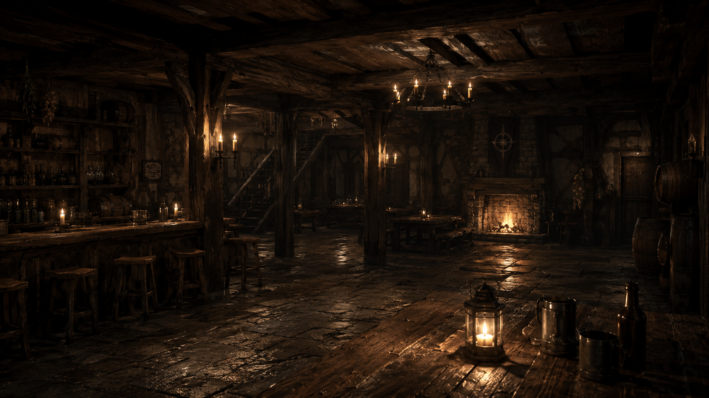
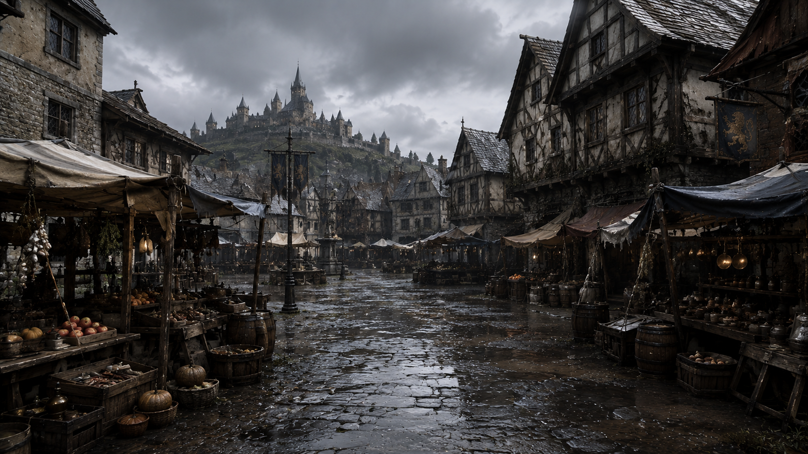
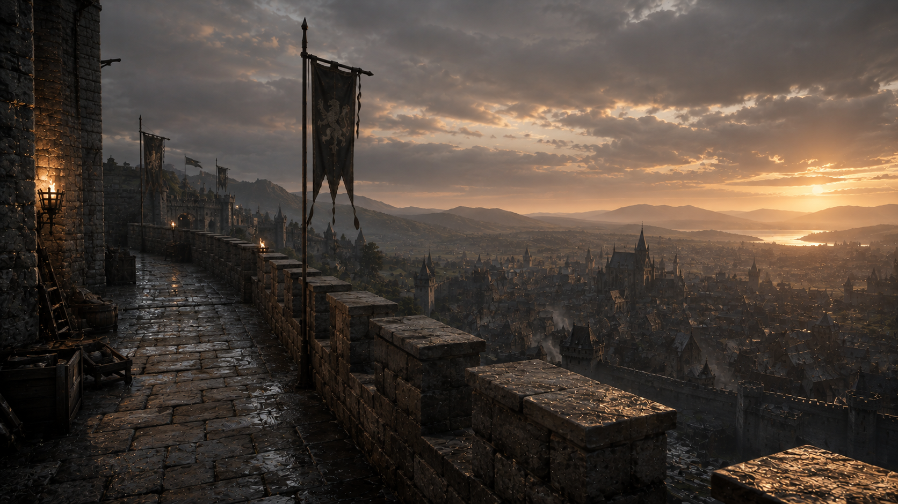
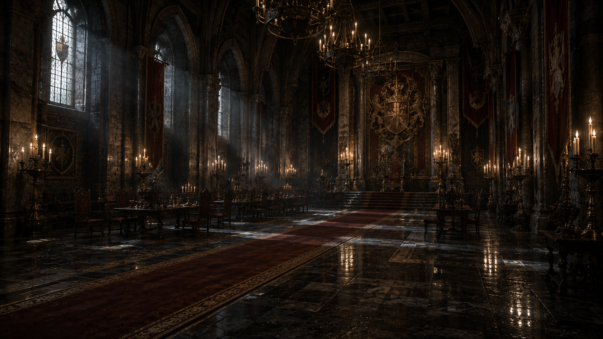
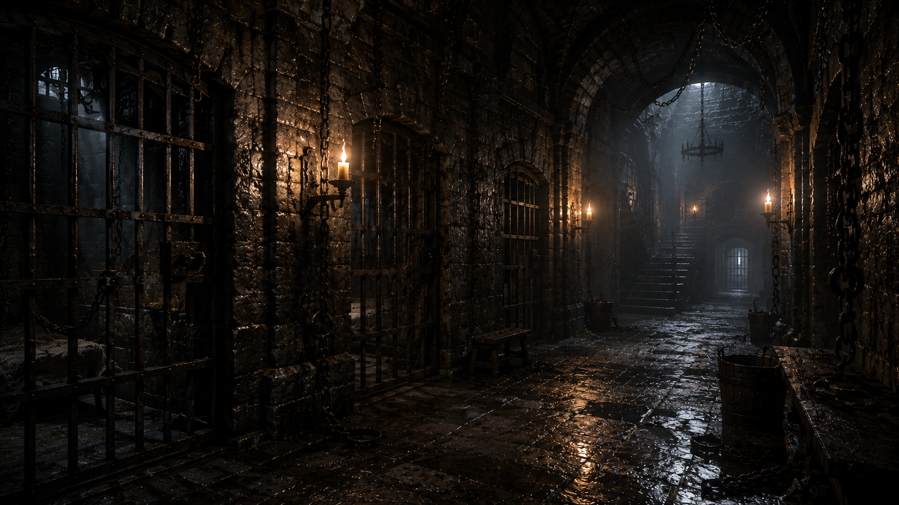
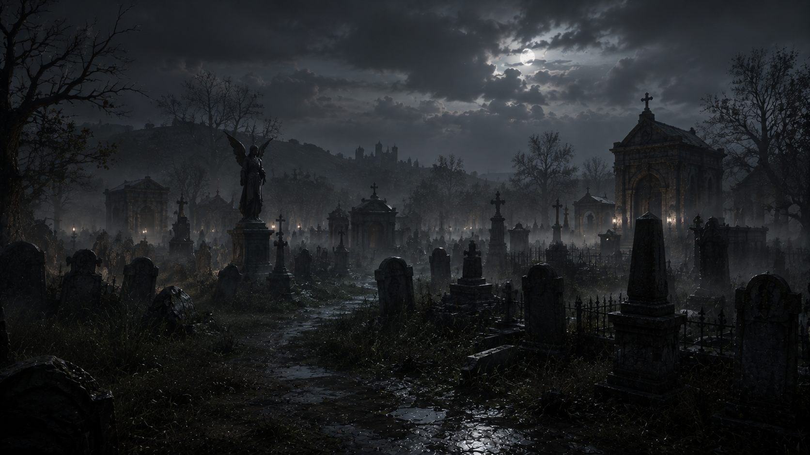

당신은 매일 자정, 선술집 "꺼지지 않는 등불" 앞에서 눈을 뜬다. 이유는 모른다. 하지만 몸은 안다 — 오늘 밤도, 10턴이 넘어가기 전에 반드시 죽는다.
마법이 희귀한 중세 성벽도시 베른의 밤. 당신의 생존은 반복적으로 죽음에 수렴하도록 설계된 어떤 이유 하나로부터 시작된다. 그 이유는 절대 직접 공개되지 않는다.
회피는 통하지 않는다 — 막힌 경로는 반드시 다른 형태의 사고로 당신을 다시 찾아온다. 유일한 방법은 반복 속에서 단서를 모으고, 죽을 때마다 세계에 새기는 법칙(주문) 하나로 죽어야 할 이유 자체를 지워나가는 것뿐이다.
반복되는 사건, 성벽도시 사람들의 행동, 전언과 물건 속에서 죽음으로 이어지는 단서를 좁혀 간다.
이번 루프에서 무엇을 다르게 할지 정한다. 같은 선택은 같은 역사를 그대로 재현한다.
위험한 시간대에 접근하거나 회피한다. 회피만으로 이유 자체는 사라지지 않는다.
생존하거나, 죽는다. 죽으면 Ω 앞에서 다음 세계에 영원히 남을 법칙 하나를 새긴다.
위력·범위·대상에 제한은 없다 — 마법의 형태여도 무방하다. 다만 죽음의 진짜 이유를 직접 알려주는 문장만은 등록할 수 없다 — 그건 법칙이 아니라 답을 요구하는 문장이므로.
"검은 나를 벨 수 없다."
"거짓말을 하면 목소리가 나오지 않는다."
"양피지에 적힌 글은 지워지지 않는다."
"내가 죽는 이유를 알게 된다." — Ω: "그건 법칙이 아니라 답을 요구하는 문장이야."
"이번에도 여기까지군." 사망과 루프 사이, 시간도 장소도 특정할 수 없는 공간에서만 만나는 존재. 오래 반복된 일을 처리하듯 차분하고, 무엇을 알고 있어도 진실을 말하지 않는다.






이름도, 종족도, 직업도 전부 당신이 정한다. 정해지지 않은 건 단 하나 — 오늘 밤이 몇 번째인지 뿐이다.